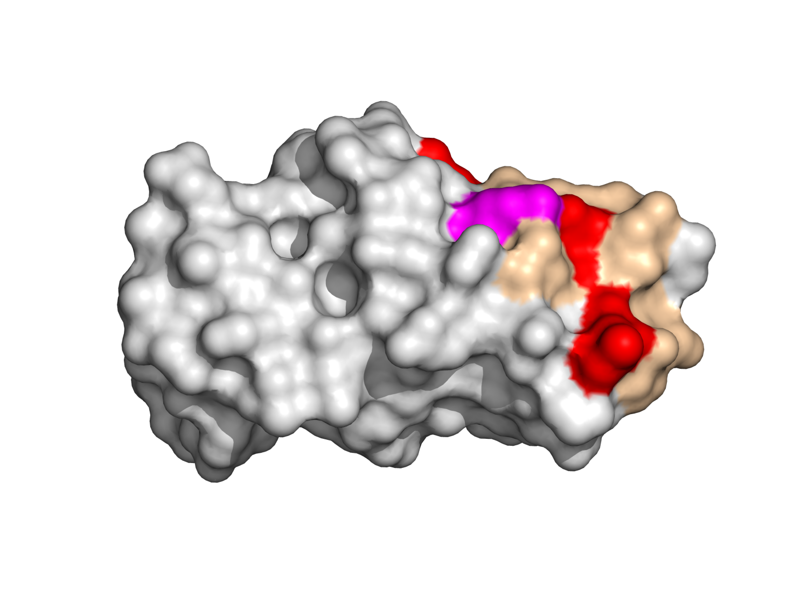
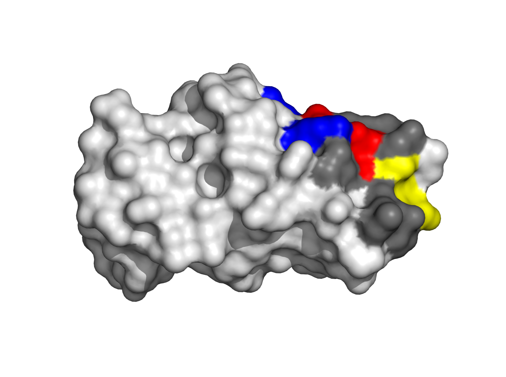
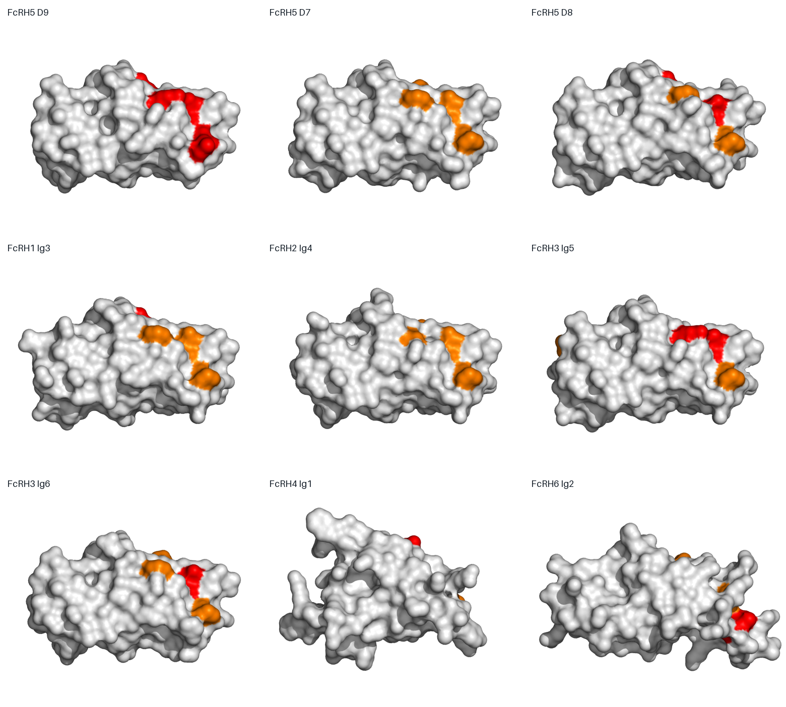
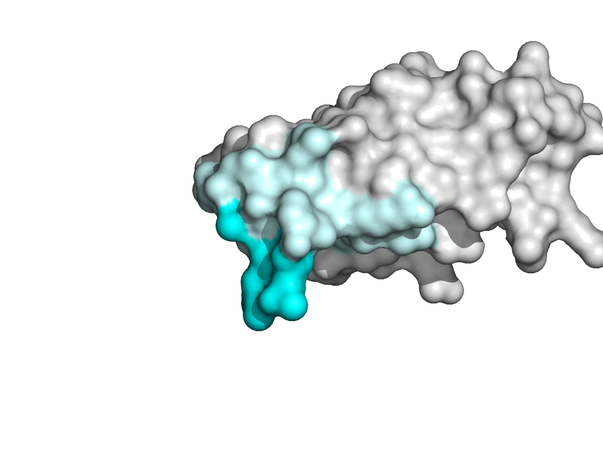
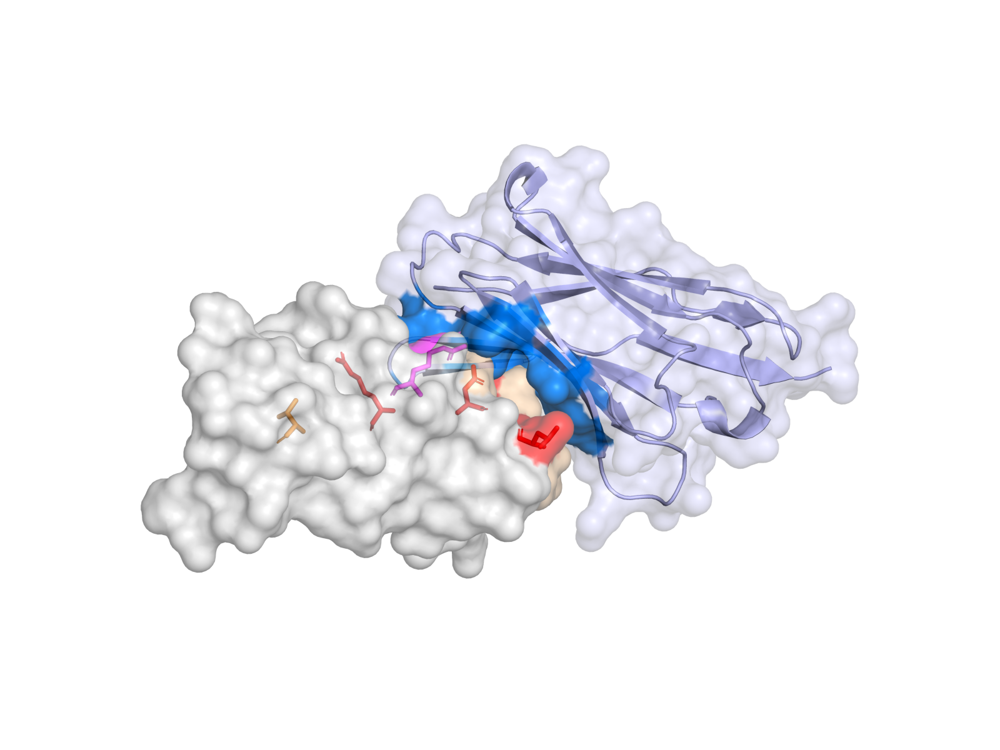
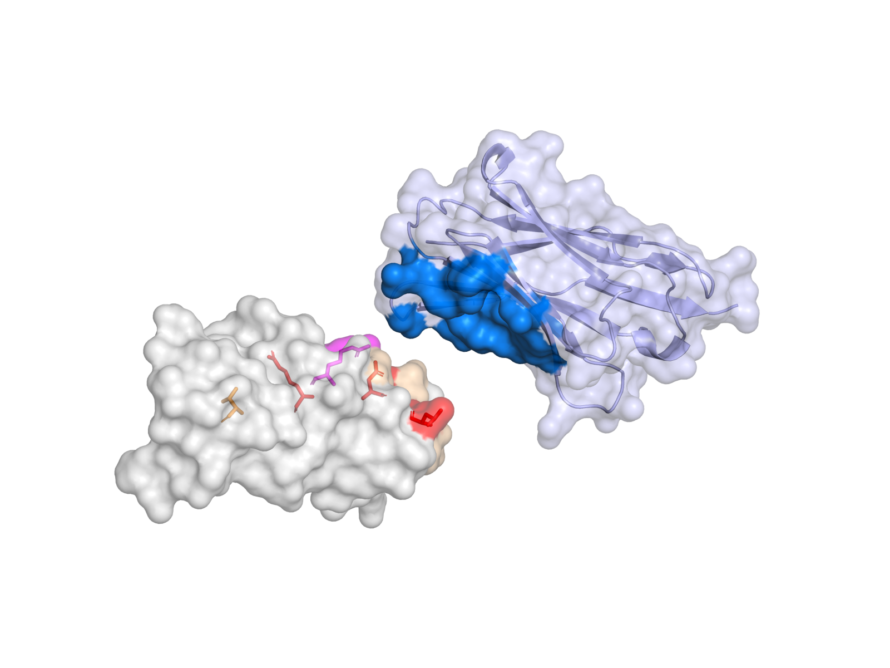

FcRH5 D9特异性VHH表位精修报告 v2
本版不再把旧图中的蓝链与紫链接触区当成两个已确认的独立表位。它们是同一预测Fab–D9界面的两侧，而且各自富含Ig样结构域保守残基。报告改为筛选可供VHH识别的组合特异性表面。
核心结论
四个专利报告候选残基均有表面暴露：L781 119.65、D822 32.67、R829 110.13、T832 94.57 Ų。最小重原子距离显示L781–D822为4.16 Å、D822–R785为2.90 Å、R785–R829为6.81 Å、R829–T832为5.96 Å，组成连续的弯曲脊面，适合由一条较长CDR3跨越。


为何比v1更特异
v1蓝区TAEHS及紫区的大部分骨架在D7/D8、FcRH2和FcRH3中高度复现。v2要求VHH同时读取多个“错配位点”：任何一个比较结构域都不能完整复现五残基核心。D8与FcRH3最高只保留2/5精确相同残基，因此它们是主要风险，而不是等价表位。
| 高风险结构域 | 映射核心序列 (781/785/822/829/832) | 精确相同 | 完整复现 |
|---|---|---|---|
| FcRH5_D7 | PWNHT | 1/5 | NO |
| FcRH5_D8 | PWDRM | 2/5 | NO |
| FcRH1_Ig3 | PWNRA | 1/5 | NO |
| FcRH2_Ig4 | PQNCP | 0/5 | NO |
| FcRH3_Ig5 | PRDVR | 2/5 | NO |
| FcRH3_Ig6 | PWDHT | 2/5 | NO |
| FcRH4_Ig1 | F--RP | 1/5 | NO |
| FcRH6_Ig2 | LFPQQ | 1/5 | NO |
下图中红色为与D9核心精确相同的映射残基，橙色为替换残基；结构均按D9对齐。不同域整体外形差异也会影响VHH能否形成完整界面。

残基级设计解释
高度暴露；多数近缘结构域不保守，但人/猴差异使其不适合要求食蟹猴交叉反应的项目。
高度暴露且在比较集中最稀有；属于探索性人源D9选择性位点。
高度暴露；仅FcRH3 Ig5出现相同残基，可能把主要残余风险限制在FcRH3。
L相对D7/D8及FcRH1/2/3常见P发生形状/疏水差异；报告提出的最强候选之一。
R在D7/D8/FcRH1等多为芳香残基；但FcRH3 Ig5为R，且人/猴可能不同。
D可排除D7、FcRH1/2/6，但D8与FcRH3保留D，不能单独决定特异性。
R可排除FcRH2/3/6，但D8、FcRH1/4可相同，需与L781/T832联合识别。
T可排除D8及FcRH1/2/4/6；FcRH3 Ig6与D7仍可相同。
高暴露酸性边缘，可提供定向作用；但D8/FcRH1/2保守，不应成为主要热点。
探索性表位B
若目标只要求人源FcRH5而不要求食蟹猴交叉反应，可探索D9 N端环：G760–T761–H762–A764及其757–768支撑表面。它在本比较集中序列更稀有，但该环pLDDT约61–79、构象可信度低于表位A，并且与专利的跨物种结合事实不一致，也无Cevostamab姿态直接支持，故仅作为低优先级探索方案。

与专利实验是否相符
这不是命名猜测，而是由专利实验对象直接限定：
| 专利实验 | 实际测试对象 | 结果 | 能够得出的结论 |
|---|---|---|---|
| Fig.10A–10D，BIACORE | 可溶性human FcRH3与human/cyno FcRH5 | 1G7.v85：FcRH5约2.4 nM；FcRH3约90 nM | “弱结合”明确属于FcRH3/FCRL3旁系受体 |
| Fig.25A，细胞FACS | 分别表达FcRH1、FcRH2、FcRH3、FcRH4、FcRH5的SVT2细胞 | 专利图注结论：结合FcRH5，不结合其他家族成员 | 可溶FcRH3的弱SPR信号没有转化为明确细胞表面结合 |
| Fig.25B，结构域删除FACS | 293亲本、FcRH5全长、FcRH5-D9-deletion | D9删除后结合消失 | 证明FcRH5 D9依赖；该实验没有测试FcRH5 D3 |
| Fig.24A–B | gD-FcRH5 full-length与gD-FcRH5-domain 9 | 使用的是domain 9构建体 | 同样没有“FcRH5 D3弱结合”实验 |
因此：两份专利没有报告1G7.v85对FcRH5自身D3的弱结合，也没有展示孤立FcRH5-D3结合实验。FcRH5 D3在本报告序列比较中仍可作为计算型负筛对象，但不能写成“专利已观察到的脱靶”。专利支持的准确表述是：对可溶性FcRH3有约90 nM弱分子结合，但FcRH1–4细胞FACS和NK细胞功能实验基本阴性。依据见WO2016205520A1专利全文与图注。
- 相符：D9删除/结构域实验支持靶点必须位于D9；本候选完全位于D9。
- 相符：专利成熟变体出现FcRH2/FcRH3旁系结合，说明只追求保守表面亲和力会损失选择性；本方案把D8、FcRH2及全部旁系受体列为负筛。
- 相符但非证明：核心中FcRH3 Ig5/Ig6各保留2/5精确残基，高于多数旁系域，能够解释FcRH3是最合理的残余风险之一；但不能据此证明专利抗体正是接触这些残基。
- 需警惕：FcRH2交叉反应主要由抗体成熟导致，表明交叉反应由完整三维界面和亲和力共同决定，不能只看线性序列。
一个正常VHH能否覆盖该表位？
几何比较
| 对象 | 最大Cα跨度 | 主轴×次轴 | 深度 | 解释 |
|---|---|---|---|---|
| FYT-499实际VHH接触抗原足迹 | 17.82 Å | 17.46×14.32 Å | 7.54 Å | 本地高可信AF3 VHH–D9模型的实际标尺（ranking 0.91，ipTM 0.87） |
| VHH实际接触paratope | 22.9 Å | 22.62×17.0 Å | 5.44 Å | 常规接触端面约22.9 Å跨度 |
| 五残基集合 L781/R785/D822/R829/T832 | 23.65 Å | 23.64×7.98 Å | 4.29 Å | 23.65 Å长而窄，已位于普通接触端面的边缘 |
| 推荐紧凑核心 L781/R785/D822/R829 | 16.55 Å | 16.36×7.95 Å | 2.64 Å | 16.55 Å且近似平面，正常VHH最可行 |
| 完整17残基支撑面 | 28.91 Å | 28.46×11.77 Å | 11.3 Å | 跨度28.91 Å、曲面深度11.3 Å，不宜要求全部被埋藏 |
刚性VHH覆盖试验
将FYT-499的正常VHH骨架作为几何标尺，围绕目标表面搜索取向并沿表面法线平移。最佳紧凑核心方案可使4/4个必需位点及11/17个支撑位点进入5 Å范围；T832距离约10.96 Å，因此不被同一姿态直接覆盖。刚性模型仍有8个<1.8 Å和16个<2.2 Å原子重叠，说明它不是可直接使用的结合模型，但这些冲突集中于未重新设计/松弛的侧链与环，拓扑覆盖本身成立。

图5，真实贴合的侧向界面视图：D9位于左侧，VHH位于右侧；灰色为D9，浅蓝为VHH，深蓝为VHH上距离D9小于5 Å的接触残基，麦色为D9支撑面，红/品红为四残基必需核心，橙色为可选T832。该角度沿界面切向观察，已经不再由抗原正面遮挡VHH接触端面。

图6，open-book界面展开图：将同一VHH刚性平移16 Å，仅用于显露双方互补表面；这不是另一种预测姿态，也不表示真实复合物存在间隙。它适合逐一比较深蓝paratope与红/品红D9核心的对应关系。
CDR长度与库设计建议
| 设计部分 | 推荐长度 | 建议占比 | 在本表位中的任务 | 主要风险 |
|---|---|---|---|---|
| CDR1 | 保留所选VHH骨架原长度（常见约7） | 不单独做长度库 | 从侧面协助读取L781/R785；以序列多样化为主 | 避免为了延伸足迹同时改变三条环的长度 |
| CDR2 | 保留所选VHH骨架原长度（常见约6） | 不单独做长度库 | 提供支撑接触，尽量不把保守Ig骨架做成主要热点 | 限制连续疏水或强正电表面 |
| CDR3主库 | 12–15（优先12、14、15） | 约70% | 覆盖16.55 Å紧凑核心；优先锚定D822/R829并与CDR1共同读取L781/R785 | 长度仍需结合loop构型和AF3多模型评估 |
| CDR3短对照库 | 9–11 | 约15% | 测试是否可形成更平坦、低熵的紧凑结合模式 | 可能只覆盖局部保守簇，必须强化D8/FcRH3负筛 |
| CDR3延伸探索库 | 16–18 | 约15% | 探索T832边缘接触或绕过表面凸起 | 不保证自动覆盖T832；需额外检查loop稳定性、非经典二硫键、疏水/电荷斑块与聚集风险 |
该推荐基于三点：本项目四残基核心只有16.55 Å，FYT-499实际抗原足迹为17.82 Å，普通VHH端面已经足够；公开VHH结构数据中CDR3中位数约15 aa，Camelidae结构集平均约14.5 aa；一项面向治疗开发的人工VHH库采用6/12/15 aa CDR3，并因≥16 aa时非经典二硫键更常见而把15 aa设为主设计上限。这里的“长度”应在最终序列上用同一编号体系（建议ANARCI/IMGT）统一复核，不能把本报告的序列位置代理范围直接当作严格IMGT注释。参考：VHH CDR序列/结构统计、Camelidae HCDR长度结构集、治疗型人工VHH库设计。
建议的接触分工（待设计模型验证）：让CDR3主要锚定D822/R829一侧，CDR1协助读取L781/R785，使VHH跨越而不是只贴住单个保守Ig样环；T832可被CDR3边缘或CDR2轻触。化学上可围绕D822布置一个受控的碱性/氢键供体位点，围绕R785/R829布置酸性或极性受体，L781附近允许小型芳香/疏水接触，但应避免形成大面积疏水或同号电荷斑块。
对VHH生成的直接约束
- 必须热点：L781、R785、D822、R829；候选VHH至少应在D9四点组合突变中表现出明显协同损失。
- 可选卫星：T832可由较长CDR3边缘接触，但不应作为所有克隆必须同时覆盖的硬条件。
- 足迹不是清单：N823/G824/Q828/E831等为可接触支撑面，不要求每个残基都埋藏；否则会迫使VHH识别保守Ig骨架。
- 结构策略：优先筛选具有中长CDR3且CDR1/CDR3共同参与的VHH；对命中物做AF3多模型复核，要求四残基核心至少3/4、最好4/4在≥3/5模型中形成5 Å接触，并检查D8/FcRH3反向复合物。
公开结构研究显示，VHH既可在平坦表面形成约700–900 Ų界面，也可通过CDR3插入沟槽；因此“一个VHH能覆盖多大的表位”取决于CDR构型而非固定圆盘。这里的判断主要依赖本项目实际VHH骨架的几何标尺，而不是只套用平均界面面积。参考：EGFR–7D12结构、TcdA–AH3结构、PD-L1 VHH结构。
VHH筛选与验证
- 正筛：使用独立折叠的FcRH5 D9；优先富集同时覆盖L781/D822/R829/T832的克隆。（建立D9依赖性并迫使VHH跨越组合特异性位点。）
- 强负筛：FcRH5 D8与D7；尤其D8是结构/序列最近的内部脱靶。（避免只识别D822/R829/E831等D8可复现表面。）
- 旁系负筛：FcRH1、FcRH2、FcRH4、FcRH6完整ECD及对应最高相似Ig域。（排除保守Ig骨架识别。）
- FcRH3分层：先以FcRH3 Ig5/Ig6作温和负筛，后以全长细胞FACS和SPR/BLI定量。（尽量消除FcRH3；若无法完全消除，将其限制为低亲和、非细胞结合的残余风险。）
- 热点验证：D9单点L781P、D822N、R829V/H、T832M/A/P及组合突变；加入R785W/Q。（验证亲和力是否依赖组合核心，而不是保守支撑环。）
- 反向移植：将D9组合核心移植至D8/FcRH2 Ig4/FcRH3 Ig5或Ig6。（若移植可获得结合，证明所选残基具有因果性。）
- 构象控制：同时检测D9单域、FcRH5完整ECD和FcRH5阳性细胞。（排除只结合截短体非天然构象的VHH。）
推荐判定门槛：单域D9与完整FcRH5 ECD均阳性；D8/D7及FcRH1/2/4/6无可测结合；FcRH3优先也应阴性。若无法消除FcRH3，至少要求相对FcRH5弱≥30–50倍且在全长细胞FACS中无明确阳性，接近专利中“可溶蛋白弱结合、细胞层面基本阴性”的状态。
文件说明
- 01_primary_D9_specificity_design.pse：首选表位A的表面、化学、标签和旧表位对照场景。
- 02_all_domains_comparison.pse：D9与D1–D8及FcRH1/2/3/4/6全部Ig域对齐比较。
- 03_VHH_rigid_coverage_feasibility.pse：正常VHH骨架覆盖紧凑核心的刚性几何模型；PDB可用于后续松弛或设计。
- 01_refined_core_residues.csv：核心/支撑残基依据；02_core_specificity_comparison.csv：全部比较域的核心映射。
- 03_VHH_selection_and_validation.csv：正负筛和突变验证清单；04/05为完整计算明细。
- 06_VHH_coverage_geometry.csv：VHH标尺、五残基集合、四残基紧凑核心及完整支撑面的尺寸对比。
- 07_patent_D3_disambiguation.csv：逐项区分FcRH3旁系受体、FcRH5 D9删除体与未被测试的FcRH5 D3。
- 08_VHH_CDR_length_recommendations.csv：CDR1/2保留策略、CDR3主库/短对照/延伸探索库的长度与比例建议。